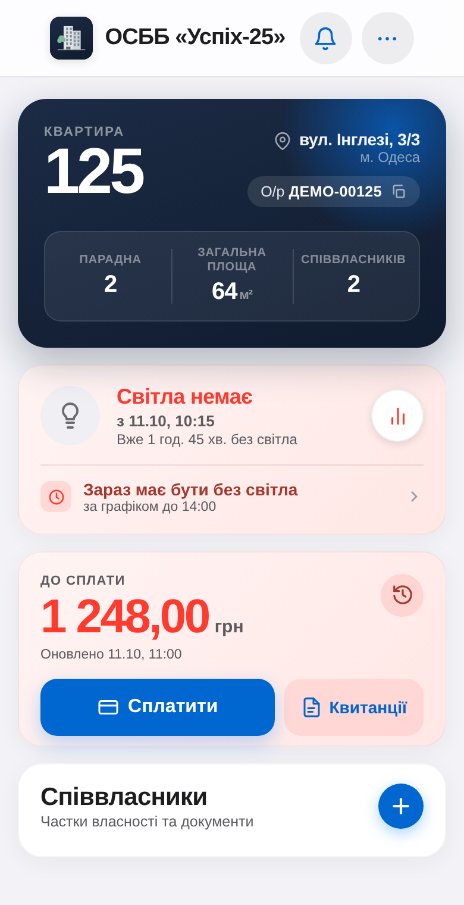
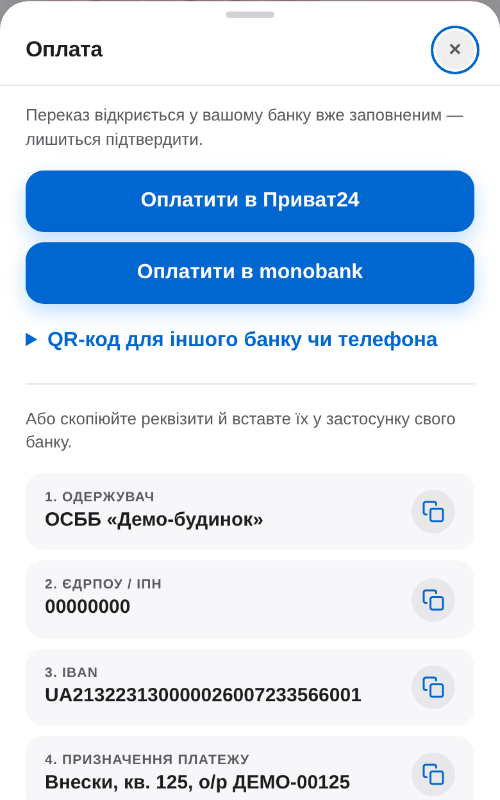
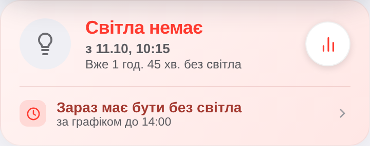
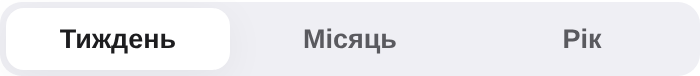
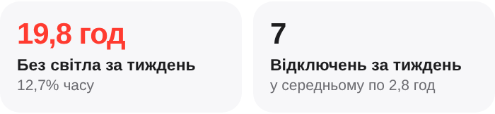
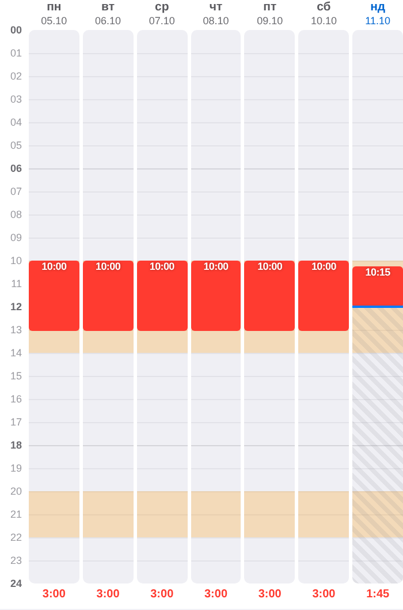
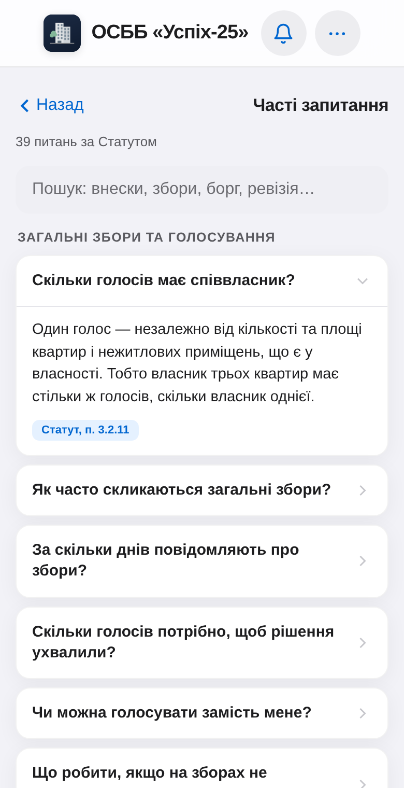
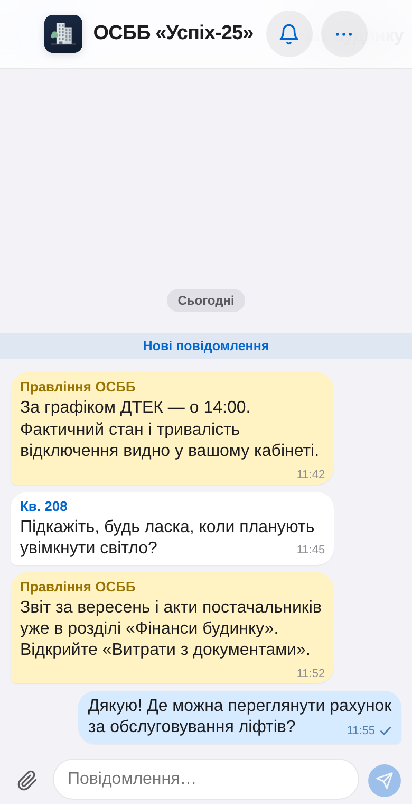
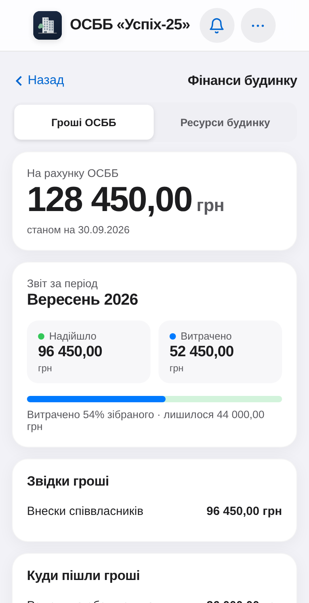
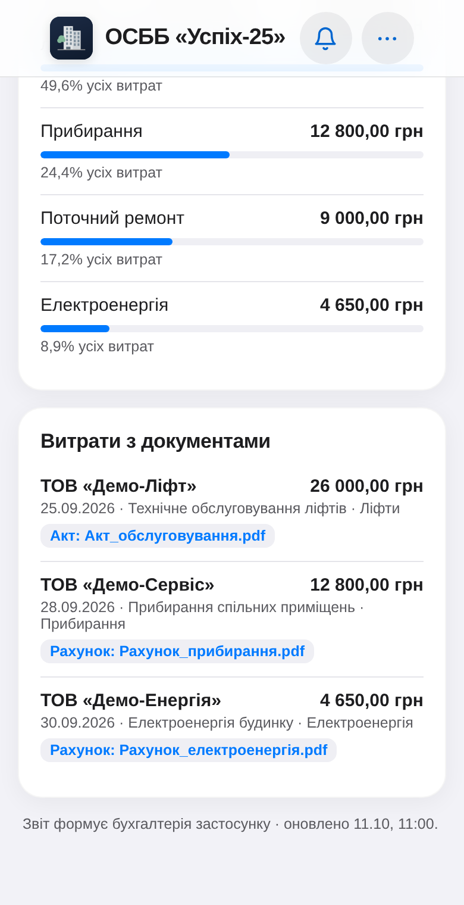

Нарахувати внески
Тарифи, приміщення, історія та квитанції.
Цифрове управління будинком
Від кабінету мешканця до банку, обліку та звітності — в одному застосунку.
Для мешканців · щоденна користь
Усе для сплати внесків — у власному кабінеті квартири.
Квитанції за періодами та PDF-файли. Баланс показує суму до сплати або переплату; історія пояснює нарахування й зараховані оплати.
Приват24, monobank або QR НБУ. Одержувач, IBAN, сума й призначення вже підготовлені. Реквізити також можна скопіювати; є перехід у Portmone.
Після надходження та розпізнавання оплати у виписці оновлюються історія й баланс квартири.


Поточний інтерфейс · демонстраційні дані
Для мешканців · щоденна користь
Чи є світло в будинку, відколи його немає та що очікується далі.
«Світло є» або «Світла немає», дата й час вимкнення або ввімкнення, поточна тривалість стану. Статус оновлюється для всіх мешканців.
Кількість відключень, загальний час без світла, середня й найбільша тривалість, розподіл за днями та годинами, журнал подій.
Кінець поточного планового відключення, наступне вікно та тижневий графік. Статистика зіставляє планові й фактичні години без світла.




Поточний інтерфейс · демонстраційні дані
Для мешканців · щоденна користь
Питання про ОСББ, розмова із сусідами та зв’язок із правлінням.
39 відповідей за Статутом: внески, борги, кошторис, збори, голосування, правління, ревізія та права співвласників. Кожна відповідь посилається на пункт Статуту.
Мешканці й правління в спільній розмові. Відповіді на повідомлення, фото та файли; авторство квартири й позначка правління, індикатор непрочитаного.
Окремі звернення з фото та статусом виконання. Оголошення з коментарями; база документів, рішення зборів, протоколи й голосування.


Поточний інтерфейс · демонстраційні дані
Для мешканців · щоденна користь
Опубліковані фінанси ОСББ — від загального підсумку до документа.
Скільки коштів на рахунку, звідки надходження, куди пішли гроші. Статті витрат, частки та виконання кошторису: річний план, план на дату й факт.
Хто виконав роботу: назва постачальника, дата, сума, зміст і стан оплати. До опублікованих витрат можна відкрити рахунок або акт із вкладеннями.
Розшифровки операцій із фільтром за місяцем, загальна заборгованість, ресурси будинку й динаміка витрат; спільні документи та рішення зборів.


Поточний інтерфейс · демонстраційні дані
Від операції до підсумку
Бухгалтер веде облік. Голова погоджує. Мешканець отримує результат.
Тарифи, приміщення, історія та квитанції.
Виписки, оплати мешканців і черга рішень.
Рахунки, акти, договори й оплати постачальникам.
Табель, аванс, виплата, податки та внески.
Проводки, ОСВ, кошторис і залишки.
Усунути розбіжності й зафіксувати місяць.
Пов’язані процеси
Відомі оплати зіставляються з квартирою та її особовим рахунком.
Неоднозначні операції — у черзі «Рішення» для бухгалтера.
Кілька банківських рахунків, повернення й контроль повторних операцій.
Договір → рахунок / акт → платіж → підтвердження банком.
Вкладення, погодження, сторно та повернення. Акт не подвоює витрату рахунку.
Табель, аванс, зарплата, відпустки, лікарняні й ЦПД; ПДФО, військовий збір та ЄСВ.
Повний цикл із перевірками
Подвійний запис, ОСВ та аналітика квартир і рахунків; точність у цілих копійках.
Розбіжності блокують закриття. Фінансові зміни в закритому місяці захищені.
Повторне відкриття — лише головою із зазначенням причини.
J0500111 із Д1, 4ДФ та Д5 за потреби. Дані з розрахунків зарплати.
Вручну в Електронному кабінеті ДПС, із власним КЕП.
Архів № 1 і № 2, версії та статуси; календар нагадує про строки.
Баланси квартир, контроль кошторису й опублікований звіт співвласникам.
Прийняття звіту ДПС підтверджує квитанція № 2.
Менше ручного перенесення даних
Синхронізація банку та зіставлення відомих оплат.
Розрахунки, проводки та підготовка звітних даних.
Черга завдань, нагадування та сповіщення.
Підтвердження нарахувань, документів і платежів.
Неоднозначні операції та закриття місяця.
КЕП голови в банку й подача звітності до ДПС.
Потрібні Firebase, доступ до банку й налаштування під будинок. Інтерфейс кешується; фінансові операції та зовнішні інтеграції потребують інтернету.
Рекомендований наступний крок
Реквізити, приміщення, тарифи, початкові залишки та документи.
Статут, облікова політика, ролі, окремий Firebase та банківський Autoclient.
Паралельний місяць: внески, виписки, витрати, зарплата, ОСВ і XML.
 Переглянути проєкт
Переглянути проєктОпис, екрани та посилання
на застосунок і код.
Наступні модулі: каса, основні засоби, річна фінзвітність і автоматична подача ДПС.
Під час запуску в іншому ОСББ потрібна адаптація правил голосування та обліку.